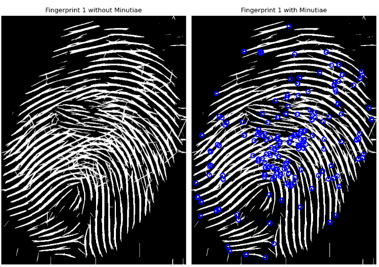
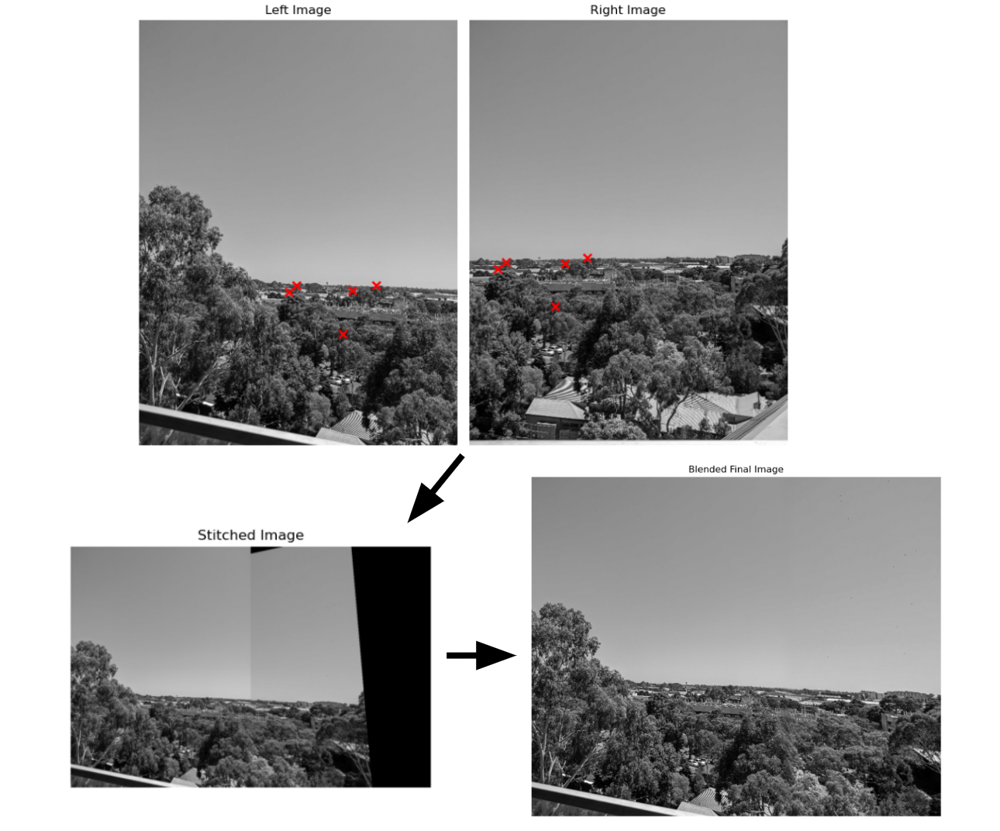
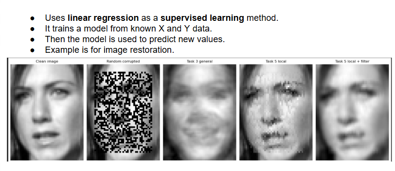

Computer Vision & Machine Learning Laboratory Work
Completed a series of advanced laboratory tasks applying machine learning and computer vision techniques to real-world image analysis problems, spanning classification, object detection, and deep learning model training.
What I Covered
- Lab 1: Enhances fingerprint images using filtering and orientation analysis, then detects minutiae for fingerprint matching.
- Lab 2: Implements image stitching by using feature matching, homography estimation, and blending to align and merge two overlapping images.
- Lab 3: Implements k-means clustering to group image pixels by colour (and optionally location) and uses those groups to create superpixels and region proposals.
- Lab 4: Using linear regression to train a model from known data and then predict values for new examples, including life expectancy and corrupted image restoration.
Key Outcomes
- Developed practical proficiency in deep learning frameworks and computer vision pipelines.
- Gained hands-on experience training, evaluating, and improving ML models for engineering applications.
PythonDeep LearningCNNComputer VisionObject
DetectionTransfer Learning